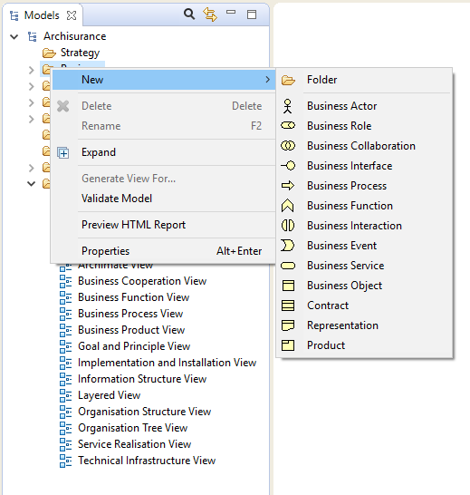

Pour ajouter de nouveaux éléments ArchiMate directement dans l'arborescence des modèles, choisissez l'un des dossiers "Métier", "Application", "Technologie" ou "Connecteurs" et faites un clic droit. Un "nouveau" élément de menu vous permet d'ajouter de nouveaux éléments dans l'arborescence:
Ajouter un nouvel élément directement dans l'arborescence des modèles
Quand un élément est ajouté à l'arborescence des modèles, il obtient le focus et vous pouvez lui fournir un nouveau nom.
Notez qu'il n'est pas possible d'ajouter des relations directement dans l'arborescence des modèles puisque ces dernières ne peuvent être ajoutées qu'en les glissant-déposant dans la fenêtre de modification de la vue (diagramme).